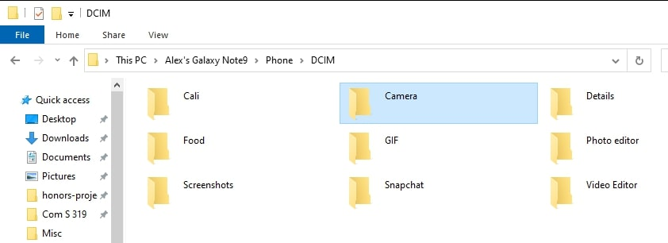
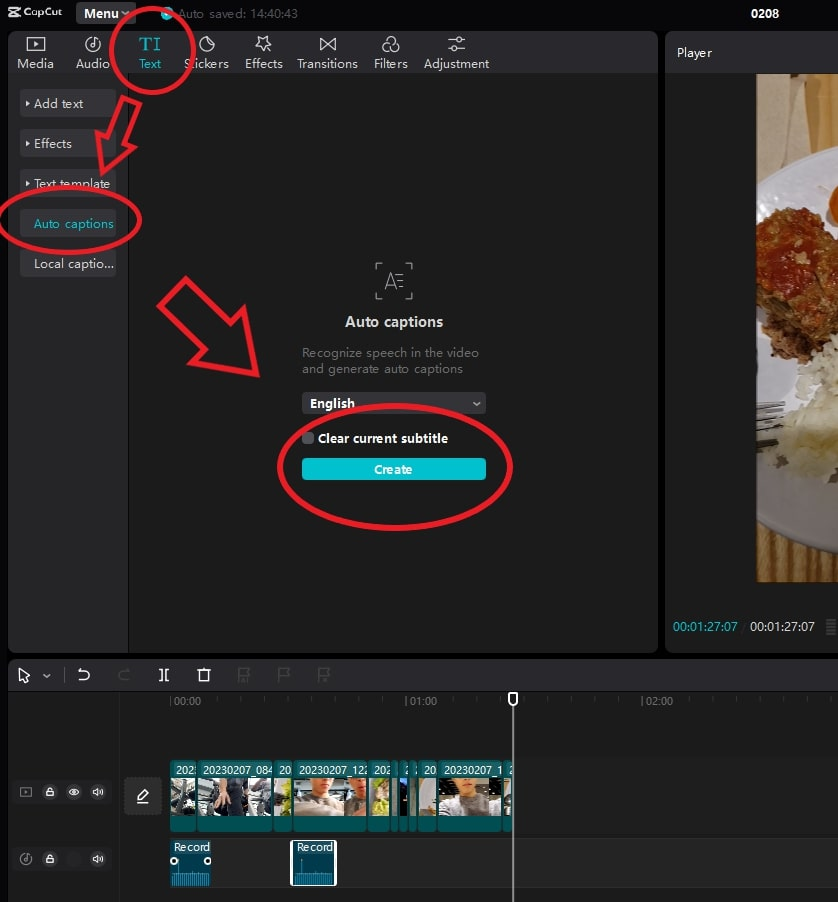
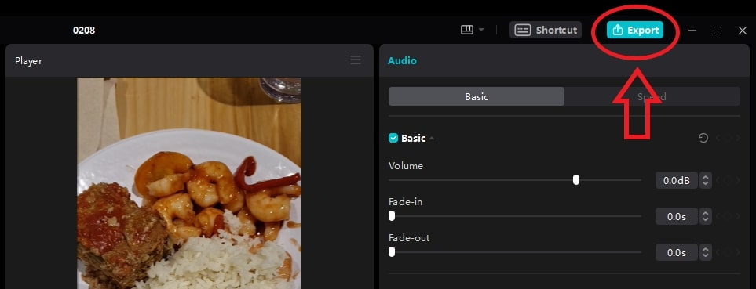
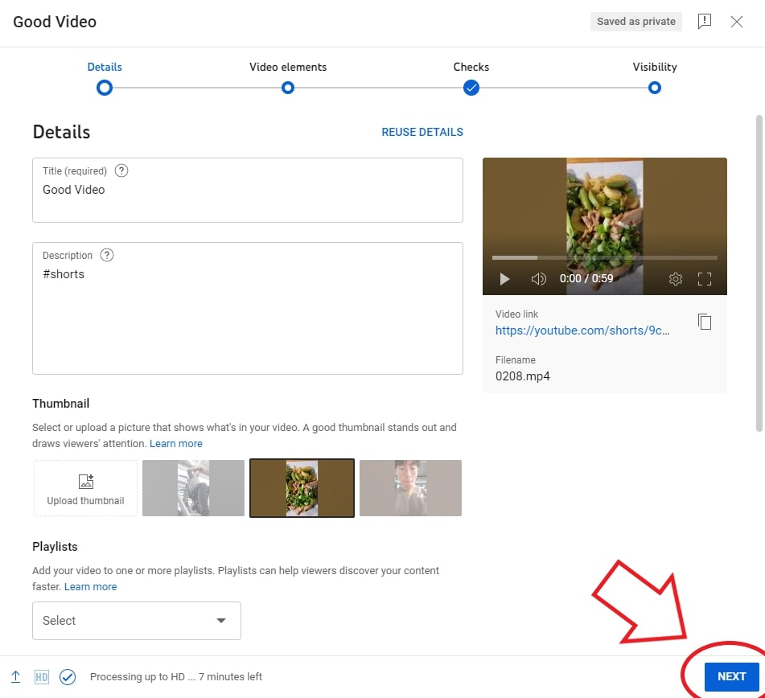
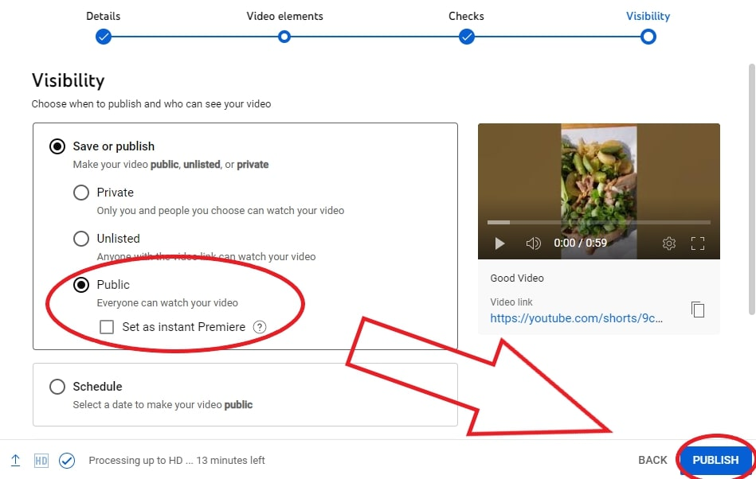

How to Make a Youtube Shorts With An Android Phone
Introduction
Youtube Shorts is gaining rapid popularity as a form of entertainment. This Tutorial will teach you how to
make a "short" using an Android phone and computer. We cover the process of recording, importing, editing, exporting, and uploading the videos.
With these steps, you will be well on your way to gaining views, likes, and subscribers.
Pre-requisites
- A computer with at least 4 GB of ram and a microphone
- CapCut installed on your computer: https://www.capcut.com/
- An Android phone
- A USB cable
Instructions
-
Film your necessary videos in portrait mode. Landscape mode is not compatible with Youtube Shorts!

(By GR8DAN -
CC0,
Link)
-
Connect your phone to your computer via a USB cable.
-
Create a folder on your computer to hold your videos.

-
Open your phone on your computer by navigating to "<phone name>/DCIM/Camera."
-

-

-

-
Select and drag the needed videos from your phone's folder to the folder you created on your computer. After the
transfer is complete, it is safe to detach your USB cable connecting the phone and computer.

-
Open CapCut and click "Start creating." This will open the CapCut editor program.

-
Inside the folder containing your videos, drag those files into CapCut. The area the videos are dragged into is
called the timeline. Notice how the videos are placed in chronological order by time of recording.


-
If you wish to remove the audio from these videos, press ctrl+shift+s. This detaches the audio. Then click backspace to delete them.
This is important for adding a voiceover.

-
For each video, drag the ends of the clip to adjust the start and end times as necessary. Note how the mouse
cursor looks like a sliding window.

-
After adjusting each clip to your liking, it is time to add a voiceover: Locate and click the
microphone button on the top of the timeline.

-
A small window will pop up with details for recording. When you are ready, press the red circle or
click the spacebar. This activates a 3-second countdown that starts recording at the location of the timeline scrollbar.
Once you are finished, press the red circle or click the spacebar again.

-
After recording, navigate to the "Text" tab at the top, click "Auto captions," then click "Create." This
will generate subtitles for your video.

-
After subtitles are generated (typically takes a few seconds for a minute-long video), look over them by clicking on each text field in the timeline.
Make corrections if needed. The automatic caption generator is generally correct but not perfect.

-
Once you are done editing, click the blue "Export" button at the top.

-
The settings it automatically applies are good for most use cases. Name your file, set the export
location, and click "Export."

-
When the file is done uploading, click "Open folder." Then click "Youtube."

-
From the opened folder, drag the video into the Youtube uploader.

-
Name the video fittingly. It is important to include #shorts in the description. This will make the
video associated with Youtube Shorts.

-
Click "Next" on the bottom right until you are on the last panel, Visibility.

-
Set the video to "Public" and then click "Publish." The video will be viewable once it is done uploading and
processing.
